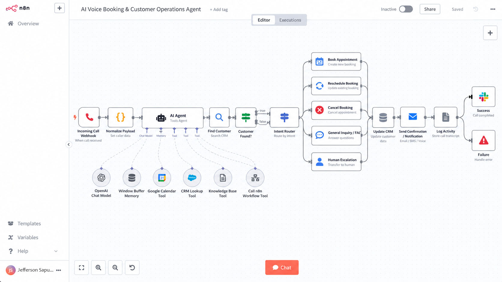
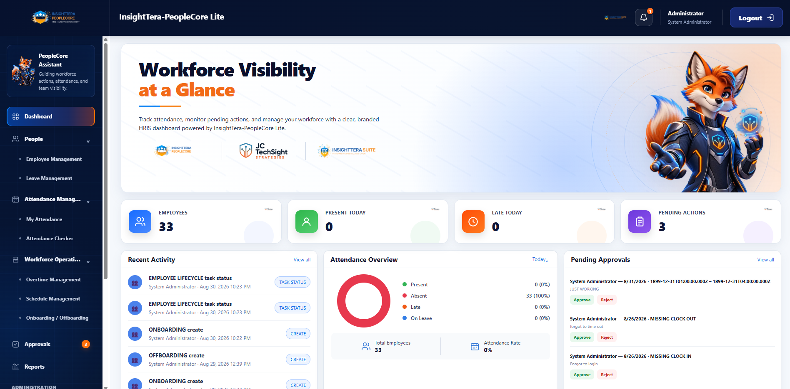
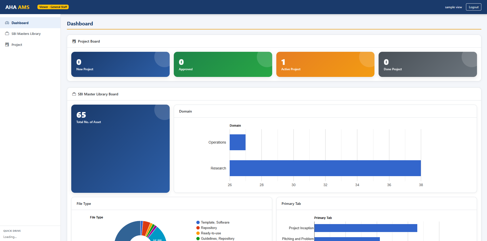
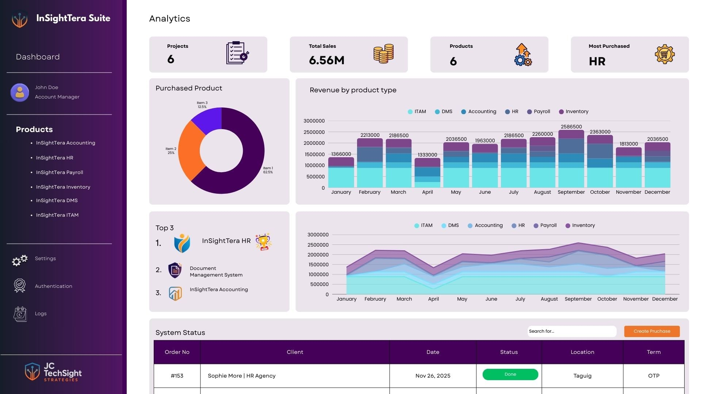
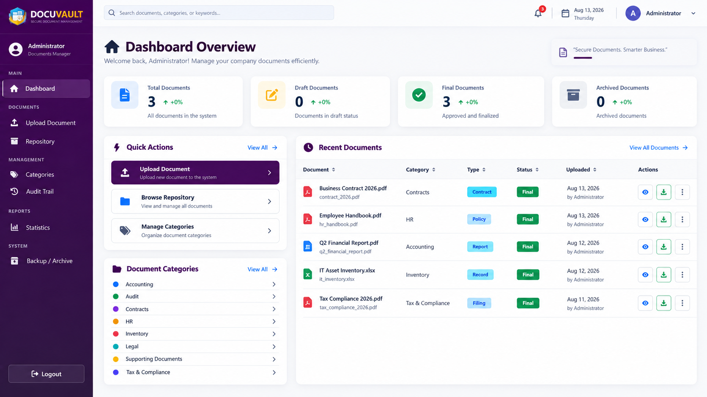
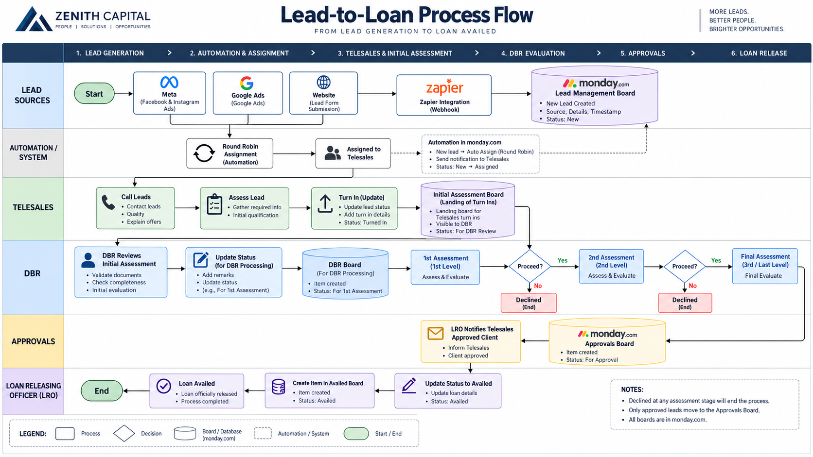
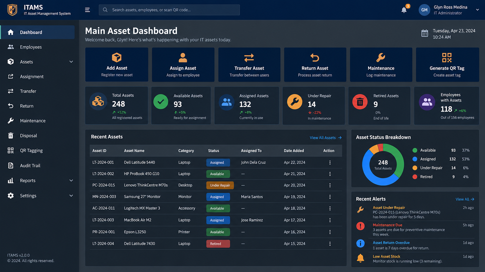

SYSTEMS•AUTOMATION•PEOPLE•PROGRESS
Jefferson Sapuay
IT MANAGEMENT & TECHNOLOGY OPERATIONS PROFESSIONAL
Bridging Business Needs with Technology.
I design and implement technology solutions that connect business processes, systems, automation, data, and people.
About Me
Business-Minded IT Professional
I'm an IT Management and Technology Operations professional with more than 10 years of progressive experience across IT infrastructure, system administration, enterprise applications, IT service delivery, digital transformation, automation, and digital platforms.
My background combines hands-on technical experience with IT leadership, business systems implementation, process improvement, and cross-functional technology management.
I solve operational problems through better systems—helping organizations improve the way infrastructure, applications, workflows, data, and people work together.
Learn More About Me →
10+
Years
Experience
Experience
20+
Systems
Implemented
Implemented
50+
Projects
Delivered
Delivered
“Better systems create better opportunities.”
Core Expertise
Connecting Business Needs with the Right Technology
Business Process Automation
CRM / ERP Implementation
Web Development & Digital Platforms
Monday.com & Zapier Automation
IT Infrastructure & Support
Data Analysis & Reporting
Digital Transformation
SELECTED SYSTEMS & DIGITAL TRANSFORMATION PROJECTS
From operational pain
From operational pain
points to working solutions.
Each project begins with understanding the business problem first—then designing the right technology around it.
NEW • AI INNOVATION SPOTLIGHT
07 / AI AUTOMATION STUDY
AI Voice Booking &
Customer Operations Agent
A business-first AI operations concept that turns inbound customer calls into structured booking, support, CRM, follow-up, and human-escalation workflows.
Voice Call→AI Understanding→Business Action→Human Escalation
Explore AI Case Study →


01INSIGHTTERA • HRIS
InsightTera-PeopleCore HRIS
A human resources information system concept designed to centralize employee information, HR workflows, records, and people operations in a structured digital environment.
- Centralized employee information and records
- Structured HR processes and workflow visibility
- Designed for scalable people operations

02AHA! BEHAVIORAL DESIGN • MAR 2026 - JUN 2026
IT Asset Management Consultant | Google Workspace & IT Governance
Led the design, implementation, and optimization of a centralized Asset Management System and governance framework using Google Workspace and Google Apps Script.
- System audit, governance architecture, and role-based access
- Document management, automation, SOPs, and user training
- Formal system turnover and ownership transition

03INSIGHTTERA SUITE • CUSTOM ERP
Insight Tera Suite
A custom integrated ERP designed to streamline operations by connecting business processes, data, workflows, and management visibility in a unified system.
- Integrated operational modules and shared business data
- Improved process visibility and decision support
- Scalable architecture for future business growth

04ASSOCIATED WITH ZENITH CAPITAL
DRS - Clients Document Record System 2.0
A centralized document records system designed to improve how client records, scanned files, loan documents, and compliance requirements are stored, secured, monitored, and retrieved.
- Role-based access, audit logs, tagging, and advanced search
- Approval, document-request, expiration, and maturity alerts
- Improved document control and reduced operational risk

05WORKFLOW AUTOMATION • INTEGRATION
CRM & ERP Automation
Workflow automation and integration initiatives designed to connect sales, operations, customer-management, and enterprise processes while reducing repetitive manual work.
- Automated routing, notifications, and cross-board workflows
- Improved process visibility and team collaboration
- Reduced repetitive manual processing across business workflows

06JC TECHSIGHT STRATEGIES • JUNE 2024 - PRESENT
IT Asset Management System
A hardware-focused IT Asset Management System covering complete asset lifecycle management—from acquisition and assignment to transfer, maintenance, return, retirement, and disposal.
- Centralized asset inventory and accountability
- Complete ownership, transfer, maintenance, and retirement history
- Better audit readiness, lifecycle planning, and purchasing decisions
07AI AUTOMATION STUDY • BUSINESS OPERATIONS
AI Voice Booking & Customer Operations Agent
A solution architecture study for turning inbound customer conversations into structured booking, support, CRM, follow-up, and human-escalation workflows.
- Eight-step voice-to-business workflow architecture
- Booking, support, calendar, CRM, and notification integration design
- Human escalation and operational logging built into the model
HOW I WORK
A practical, business-first
delivery approach.
STRATEGY→EXECUTION→IMPACT
Discover
Understand the process, users, pain points, risks, and desired business outcome.
PEOPLE FIRST
Analyze
Map the current state, identify gaps, dependencies, and prioritize opportunities for improvement.
INSIGHTS TO ACTION
Design
Translate business requirements into workflows, data structures, system architecture, interfaces, controls, and automation.
FROM IDEAS TO SOLUTIONS
Implement
Build, configure, integrate, test, document, train, and continuously improve the solution.
DELIVER LASTING VALUE
Professional Experience
A Journey of Growth and Impact
IT Asset Management Consultant
AHA! Behavioral Design
Led a four-month Google Workspace and IT Asset Management consultancy covering system audit, governance architecture, implementation, training, and documentation.
IT Support Supervisor
Zenith Capital Credit Group Corporation
Led daily IT support operations, supervised the IT team, improved service delivery, managed onboarding/offboarding, asset lifecycle, procurement, and systems implementation initiatives.
IT Specialist
Zenith Capital Credit Group Corporation
Managed infrastructure, networks, servers, endpoint support, backups, user support, website development, and major enterprise platform implementations.
Junior IT Specialist
Vets in Practice Animal Hospital
Supported networks, servers, N-Computing, NUCs, CCTV systems, security controls, access management, and backup and recovery processes.
IT Staff
Happy~Haus Food Corporation
Supported website and online ordering development, technical operations, data analysis, and outlet geozoning for 5 kitchen branches and 600+ kiosk locations across the Philippines.
Computer Technician
Advance Solution Inc. (ASI)
Configured and maintained computer systems, operating systems, networks, security tools, peripherals, and end-user technical support.
SYSTEMS, PLATFORMS & TOOLS
Technology & Platforms
Tools I use across enterprise systems, automation, custom applications, IT operations, and digital platforms.
Enterprise Systems
Oracle NetSuite
Odoo CRM
monday.com
Google Workspace
Microsoft 365
Automation & Integration
Zapier
Google Apps Script
monday.com Automations
Webhooks
API Integrations
Custom Systems & Development
HTML
CSS
JavaScript
PHP
Laravel
React
MySQL
IT Operations & Digital
Windows
Linux
IT Asset Management
WordPress
SEO & Analytics
Hostinger
Certifications
Continuous Learning
Let's Work Together
Have a project, opportunity, or just want to connect?
I'd love to hear from you.
✉
Emailsapuayj529@gmail.com
☎
Contact09065609218
⌖
LocationPhilippines
in
LinkedInlinkedin.com/in/jeffersonsapuay